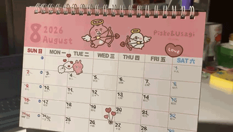

i don't use a planner, but i do use a calendar - both physical and digital.
a planner makes me dwell too long on the things i didn't get done by the time that i wanted to get them done, but events or tasks on a digital calendar can be moved easily.
so, if i didn't get them done by when i originally planned them to be, i can just move it to another time to accomodate the present.

a physical calendar helps me keep track of time since i physically cross the days off - it makes me more concious of the time that passes.
i use a physical calendar to keep track of big tasks, like events that last a duration of multiple days or a big exam that i need to focus on, and i draw an arrow on the date.
with a digital calendar (i use outlook), it can send me reminders - both on my computer and phone. i also put smaller tasks (or small potato stuff) onto my digital calendar, which i solely access on my computer.
the reason that i use outlook calendar is because all my school stuff is on microsoft, and i always have my emails open. outlook also has everything on like a sidebar, so it's easy to click on the calendar.
i sometimes use to-do-lists but it depends on the day and how many urgent things are coming up.
if there are a lot of things that i need to get done like immediately, then i will make a to-do-list.
i've tried to use planners before but i don't like them. firstly, it reminds me of the things that i was not able to finish on time. and, secondly, i don't like how rigid they are. i need some flexibility in my schedule.
i make the super important tasks red and i put the default color for all other tasks (more everyday, less life and death).
i often check my digital calendar throughout the day. when i'm at school, i frequently check it like at least once per class so that i can know where i am supposed to be at, how to prioritize the tasks that a teacher gives out compared to my other assignments.
i basically decide how urgent that task is compared to the other assignments that i have going on.
at home, i check my digital calendar every few hours to remind myself of what i need to do. i have my physical calendar in front of me when i'm working at my desk, so i check that more often compared to the digital one.
when i'm home and i'm doing things that are not school-related, i would just look up and check the calendar to remind myself about how much time is passing.